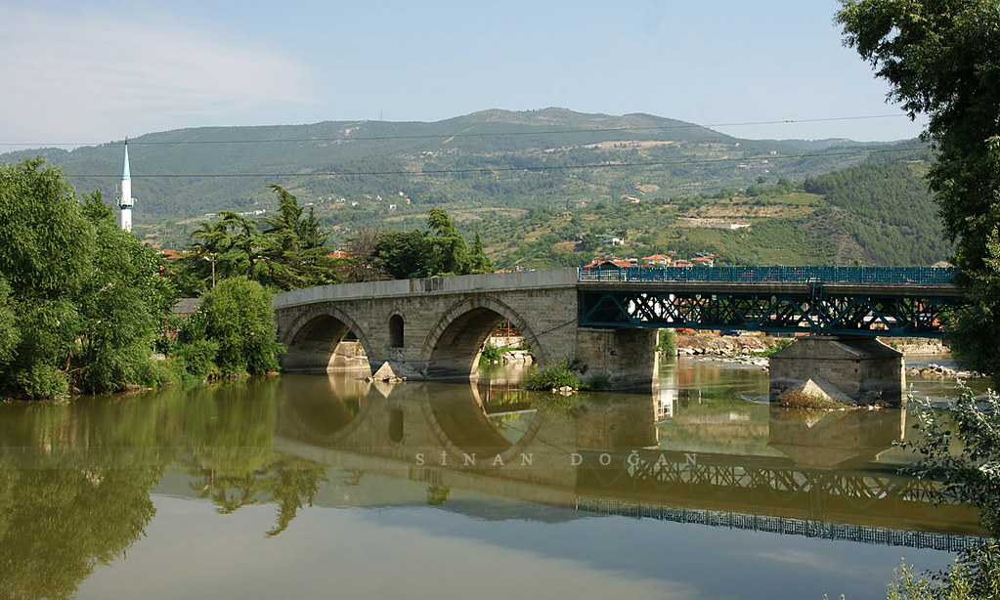
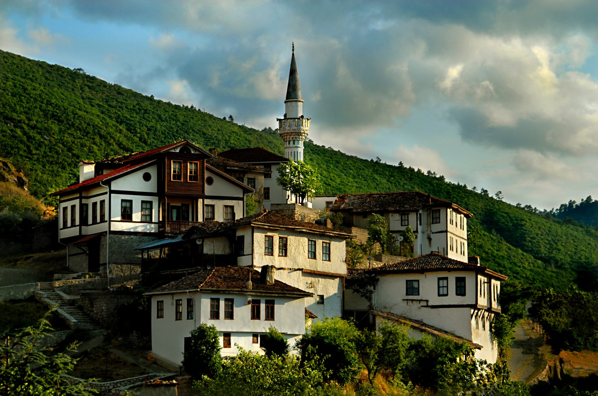
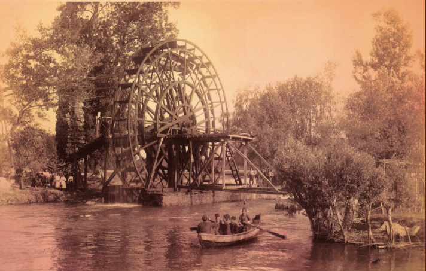
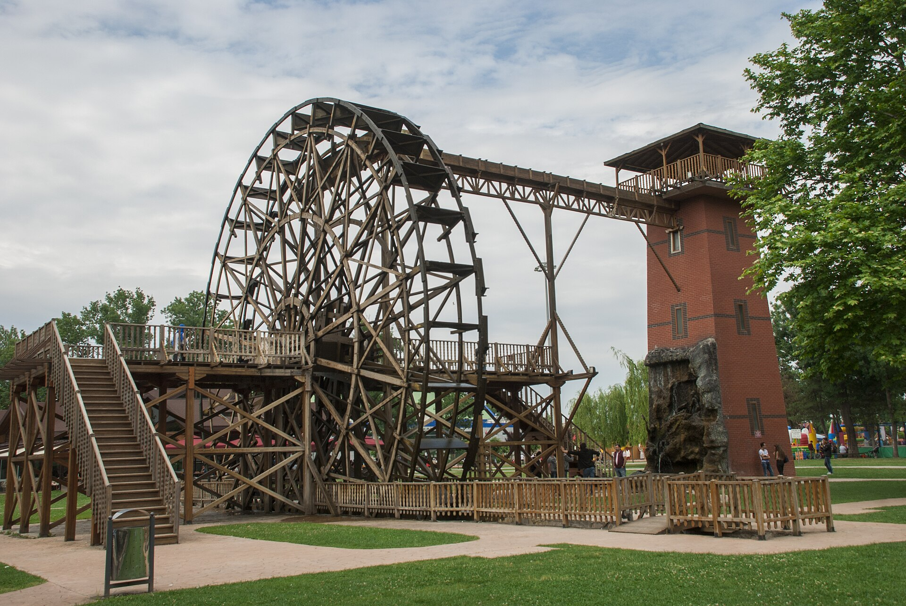

Ali Fuat Paşa Köprüsü

Ali Fuat Paşa Köprüsü, Sakarya Nehri üzerinde yer alan ve uzun yıllar boyunca bölgenin en önemli geçiş noktalarından biri olarak hizmet vermiş tarihi bir köprüdür. Geyve ilçesi sınırları içindeki konumuyla hem ulaşımda hem de kültürel hafızada özel bir yere sahiptir.
Milli Mücadele döneminde köprü, askeri sevkiyatlar ve stratejik hareketler açısından büyük önem taşımıştır. Cephelere ulaşım güzergâhı üzerinde bulunması, onu dönemin kritik yapılarından biri hâline getirmiştir.
Adını, Milli Mücadele'nin önemli komutanlarından Ali Fuat Cebesoy'dan almaktadır. Günümüzde hem tarihi kimliği hem de mimari özellikleriyle korunması gereken bir kültürel miras olarak kabul edilmektedir.
| Özellik | Değer |
|---|---|
| Konum | Geyve, Sakarya |
| Yapım Yılı | 1495 |
| Uzunluk | 196.5 metre |
| Malzeme | Taş |
| Koruma Durumu | Tescilli tarihi eser |
Taraklı Evleri

Taraklı Evleri, Osmanlı döneminden günümüze ulaşmış ahşap sivil mimarinin en özgün örnekleri arasında yer almaktadır. Dar sokakları ve tarihi dokusuyla ziyaretçilere geçmişe yolculuk hissi yaşatmaktadır.
İlçe, taşıdığı kültürel değer ve korunmuş mimari yapısı sayesinde UNESCO Dünya Mirası Geçici Listesi'nde yer almaktadır. Bu durum, Taraklı'nın yalnızca yerel değil uluslararası ölçekte de önemli bir kültürel varlık olduğunu göstermektedir.
Özellikle korunmuş tarihi dokusu, geleneksel Osmanlı şehir yerleşim düzenini yansıtan sokakları ve özgün evleriyle tanınır. Sakarya'nın kültür turizmi açısından en dikkat çekici duraklarından biridir.
Öne Çıkan Özellikler:
- Cumbalı ve çıkmalı ahşap yapılar
- El işçiliği tahta süslemeler
- Dar ve taş döşeli sokaklar
- 18-19. yüzyıldan kalma özgün evler
- Hükümet Konağı ve tarihi camiler
Çark - Dünden Bugüne
Çark, Sakarya'nın en önemli simgelerinden biri olarak şehrin kimliğinde özel bir yere sahiptir. Yıllar içinde geçirdiği değişimlerle birlikte şehrin dönüşümüne tanıklık etmiş, hem geçmişin izlerini hem de günümüzün modern yüzünü barındırmaktadır.

Şehrin eski dokusunu yansıtan nostaljik görünüm

Modern yenileme çalışmalarının ardından güncel hali
Çark, zaman içinde hem fiziksel hem de sosyal anlamda önemli bir dönüşüm geçirmiştir. Şehrin büyümesine ve modernleşmesine paralel olarak çevresi yenilenmiş, peyzaj düzenlemeleri yapılmış ve bugün Sakaryalıların günlük yaşamının vazgeçilmez bir parçası hâline gelmiştir. Geçmişteki sade dokusundan günümüzdeki canlı görünümüne uzanan bu değişim, şehrin gelişim hikâyesiyle iç içe geçmiştir.